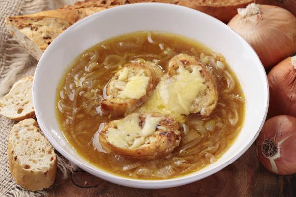
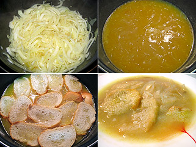

|  |
Estamos en otoño y el invierno asoma a la vuelta de esquina, el cuerpo nos pide recetas de cuchara: sopas, cremas calientes, purés, cocidos, guisos, estofados y un largo etcétera. Si buscáis en el blog veréis que recetas de sopas tengo pocas o ninguna. Me he decidido a cambiar ésto comenzando con un clásico: "Sopa de cebolla a la francesa", una receta exquisita, tradicional y básica en cualquier cocina que se precie. Un plato delicioso y sencillo que puede ser un primer plato en Navidad o plato único con un gran cuenco de sopa en una cena casera. Imaginaos, en fusión con el sofá, calentando poco a poco las manos mientras ves tu serie o peli preferida, me dan ganas de tomarme otro cuenco más.
La elaboración de esta sopa es muy fácil, aunque puede que un poco laboriosa. Una sopa líquida pero con un punto de almidón que le da una textura entre sopa y crema, lo que le da a la sopa de cebolla ese toque único. Una receta digna tanto de un primer plato en la comida de Navidad como de una cena sencilla en estas noches de frío en las que sólo quieres estar con tu mantita en el sofá.
Esta sopa tiene una gran historia, según el escritor de "Los tres mosqueteros", el francés Alexandre Dumas, era “una sopa muy querida de los cazadores, gente de mala vida y venerada por los borrachos”. Como veis una receta económica del pueblo aunque fue Estanislao Leczinski, antiguo rey de Polonia y apasionado de la gastronomía, el que descubrió esta sopa tradicional en una fonda francesa y tanto le gustó su sabor delicado que no paró hasta hacerse con la receta. Desde ese momento adquirió fama y popularidad en la corte y más tarde se convirtió en el plato obligado con el que terminaban las juergas nocturnas parisinas, de ahí la cita de Dumas.
Ingredientes:(4 personas)
|
Elaboracion:
|
 |